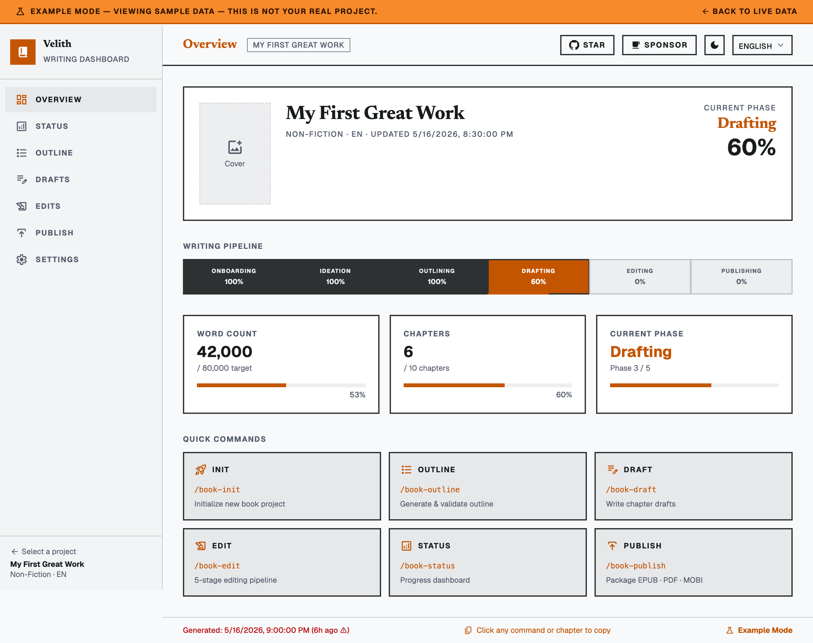

Books to the human-quality bar.
Six phases take a book from a blank page to a publishable EPUB — and hold every chapter, every edit, and every image to one standard: a cold reader who buys books in this genre cannot tell it was machine-drafted.
Claude Code · Codex CLI · Grok Build · Agy · Cursor · Cline · Aider
She knew exactly why she had come back to the harbor — not merely for the sea, but for the version of herself she had left on it.
Marta walked the pier. It wasn’t just the salt air; it was the memories that seemed to seep from the very boards beneath her feet. The boards had memory in them, she thought — her grandmother’s, mostly, and one wet August that was hers alone.
critic, pass 3 — “seep from the very boards” is tell № 14. Ground it in a real August. — revised below, rescored 8.1
The method
Frontier models write good sentences. Left alone they still write books readers put down. None of that is a model problem — it is a pipeline problem — and Velith is the pipeline.
Why books fail
Velith’s quality bar is built on the 2026 AI-tell taxonomy — the things that put readers down now, not the “delve” lists of two years ago.
The gate
The same rubric every writing, editing, and reviewing agent reads. Voice lock needs axis one at 7 or better. Publication needs all five.
| = the publishing gate. Below it, the verdict is REVISE and the loop runs again.
Dramatis personae
Skills are the entry points; these are the agents behind them. Each has a minimal toolset and its own effort level — the writer and the beta reader get the most.
Usage
You approve at the author checkpoints — concept, outline, voice lock, look lock, readiness. Everything between them runs unattended.
/plugin marketplace add epicsagas/plugins /plugin install velith@epicsagas
# in your empty book directory > /book-init # genre, reader, voice sample → PRD + STYLE > /loom # detects state, runs the next phase, stops at checkpoints
Eighteen skills ship with the plugin, including seven genre craft references — fiction, non-fiction, technical, screenplay, poetry, game, academic — and a custom genre builder.
node velith.mjs scan my-book --ui node velith.mjs metrics drafts/ch07.md node velith.mjs snapshot my-book pre-lineedit node velith.mjs images compile my-book node velith.mjs images render my-book
Deterministic prose metrics (sentence rhythm, tell density, cross-chapter repetition), snapshots before every rewriting stage, and per-backend image prompts. /book-status --ui opens the Svelte dashboard.

Compared
| Velith | Raw prompts | Notion AI | Jasper / Sudowrite | Scrivener | |
|---|---|---|---|---|---|
| Full-manuscript context | Every agent, every task | Manual | None | Limited | n/a |
| Voice lock + critique loop | Built in | None | None | None | Manual |
| Fact-checking, claim ledger | Dedicated agent | None | None | None | Manual |
| Readiness gate by cold readers | Blocks publishing | None | None | None | None |
| Visual consistency per book | Art bible + vision QA | Per-image prompts | None | None | None |
| Output | EPUB, PDF, MOBI, TXT, MD | Copy-paste | Markdown / PDF | DOCX, limited | DOCX, PDF |
| Control | Prompt-level, Apache-2.0 | Full | Black box | Black box | Full |
Start with onboarding and a page of your own prose — the voice fingerprint does the rest.